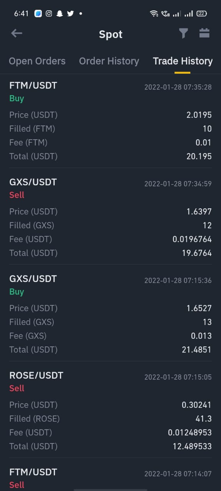

About Us
About Section Contains,
1 ) Why did you make this Blockchain & Cryptocurrency Blog?
I am more interested in Blockchain & Cryptocurrency Field.Especially,Cryptocurrency.So I make this blog easily and comfortably.
2 ) Why are you interested in Cryptocurrency?
One of the main reasons crypto currency is so popular is the profit potential. Cryptocurrencies are digital currencies that use cryptography to secure their transactions and control new units' creation.
3 ) Are you invested in Cryptocurrency?
Yes, I am a Invester in Cryptocurrency Trading.I love Trading at the same time I am Trader in Most Popular Cryptocurrency Trading platforms.
Finally,
In this page,I share with my Trading and my Forecast. That is going to be very helpful for us. Feel free to message us via email or live chat if you have anything to say.
Blockchain
What is Blockchain?

Blockchain is a shared, immutable ledger that facilitates the process of recording transactions and tracking assets in a business network. An asset can be tangible (a house, car, cash, land) or intangible (intellectual property, patents, copyrights, branding).
How Do Blockchain Work?

Blockchain is a system of recording information in a way that makes it difficult or impossible to change, hack, or cheat the system. A blockchain is essentially a digital ledger of transactions that is duplicated and distributed across the entire network of computer systems on the blockchain.
Blockchain Used for?

Blockchain technology can be used to create a permanent, public, transparent ledger system for compiling data on sales, tracking digital use and payments to content creators, such as wireless users or musicians.
What is the biggest blockchain company?

The number one blockchain company in the world right now is Coinbase Global Inc. (COIN), which has a revenue of 5.9 billion dollars and a net income of three billion dollars. The market cap is set at 52.4 billion dollars, and it can be found on the Nasdaq.
How is blockchain being used today?

Blockchains are now being used to cut out the middleman and create a secure, decentralised way for service providers and customers to connect and transact safely and directly..
Cryptocurrency

What is cryptocurrency?

Cryptocurrency, sometimes called crypto-currency or crypto, is any form of currency that exists digitally or virtually and uses cryptography to secure transactions. Cryptocurrencies don't have a central issuing or regulating authority, instead using a decentralized system to record transactions and issue new units.
What is cryptography?

Cryptography is key to the security of the blockchain ledger. Each transaction is recorded on the blockchain using encrypted data. Each user can access their own information and buy and sell crypto securely, using their public and private key.
How Do Cryptocurrency Work?

Cryptocurrencies run on a distributed public ledger called blockchain, a record of all transactions updated and held by currency holders. Units of cryptocurrency are created through a process called mining, which involves using computer power to solve complicated mathematical problems that generate coins.
When was cryptocurrency invented??
Many investors consider bitcoin to be the original cryptocurrency. Founded in 2009 by a programmer (or, possibly, a group of programmers) under the pseudonym Satoshi Nakamoto, bitcoin ushered in a new age of blockchain technology and decentralized digital currencies.
Are Cryptocurrencies legal in india?

The Reserve Bank of India (RBI) and the union government have not given any sort of recognition to cryptocurrencies and, therefore, they are not legal in the country right now, the minister of state for finance, told reporters in Indore.
Latest News:
Supreme Court asked the central government to make its stand clear on the cryptocurrencies. The central government is preparing a Bill to regulate cryptocurrency and other digital assets in India.
How is Cryptocurrency being used today?
One of the most well-known uses of cryptocurrency is for sending and receiving payments at low cost and high speed. For example, a recent $99 million litecoin (LTC) transaction took only two and a half minutes to process and cost the sender only $0.40 in transaction fees.
Cryptocurrency Trading
What is cryptocurrency trading?

Cryptocurrency trading is the act of speculating on cryptocurrency price movements via a CFD trading account, or buying and selling the underlying coins via an exchange.
How do I start investing in cryptocurrency?
Step 1: Select Right Crypto Exchange
Step 2: Open a Trading Account
Step 3: Fund Your Account
Step 4: Buying and Investing in Cryptocurrency
Step 5: Store your Cryptocurrency
Step 6: Choose a Strategy
Is trading cryptocurrency profitable?
Day trading crypto is one of the most lucrative and easiest ways to make money from the crypto market. Many traders today are learning how to move in and out of the market within a day, and they've taken advantage of the volatility in coin prices to profit massively.
What are the benefits of cryptocurrency trading?
The benefits of cryptocurrencies for the global economy are thought to range from lower transaction fees for the online exchange of money, to increased protection from identity theft due to the secure nature of cryptocurrencies. It is also thought that cryptocurrencies will help break down the barriers to finance in developing nations. For example, cryptocurrencies could easily be accessed via mobile phones in countries without banking infrastructure.
Is crypto trading safe?
Investing in crypto assets is risky but also potentially extremely profitable. Cryptocurrency is a good investment if you want to gain direct exposure to the demand for digital currency. A safer but potentially less lucrative alternative is buying the stocks of companies with exposure to cryptocurrency.
Can crypto make you rich?
Affordable cryptocurrencies with strong future potential can yield great profits for investors. The top cryptocurrencies are attracting investors who are looking to diversify their portfolios. Several large techs and growing companies are accepting cryptocurrencies as payments.
Evolution of Cryptocurrency

1980s – The Pre-Bitcoin Era
Several attempts prior to the current versions of cryptocurrencies failed to achieve broad support. These are early 1980s notions from the Netherlands and the United States. Digicash, which went bankrupt in the 1990s, was maybe the first prominent digital currency.
DigiCash was founded by American computer scientist and cryptographer David Chaum . DigiCash has only been around for a decade and has failed to persuade banks to embrace its technology during that period. The firm declared bankruptcy in 1998, ten years before Bitcoin’s official launch.
B-Money, Hashcash, Flooz, and Bit Gold are examples of other efforts at cryptocurrencies or their underlying technology.
1998 – 2009 – Wei Dai and Satoshi Nakamoto
Wei Dai, a Chinese author and computer engineer, was the first to define modern cryptocurrencies in 1998. The concept was completely released in 2009 when a white paper outlining the fundamentals of blockchain and Bitcoin was published. “Satoshi Nakamoto,” the white paper’s author, is probably a pseudonym for either a person or a group of individuals.
2009 – 2010 – The Beginning of Bitcoin
Since Bitcoin’s inception in 2009, a growing group of Bitcoin supporters began trading and mining the cryptocurrency. Bitcoin is usually considered the first modern cryptocurrency since it was the first publicly used method of trade to combine decentralised control, user privacy, blockchain-based record-keeping, and built-in scarcity.
For the first time in 2010, someone chose to sell their "Bitcoins, exchanging 10,000 of them for two pizzas".. If the buyer had held on to those Bitcoins, they would now be worth more than $100 million at today’s values.
2011 – The Rise of Alternative Coins
The first rival cryptocurrencies emerge as Bitcoin grows in popularity and the concept of decentralised and encrypted money gains traction. These are also known as alternative coins or altcoins, and they aim to improve on the original Bitcoin architecture by providing faster transaction speeds , anonymity, or some other benefit. Namecoin and Litecoin were among the first to emerge.
2012 – WordPress and Bitcoin
WordPress was the first large retailer to accept Bitcoin as payment in late 2012. Others followed suit, including Newegg.com, Expedia, Microsoft, and Tesla, an online electronics store. Today, many big companies already accept Bitcoin as a valid payment method.
2013 – 2014 – Bitcoin’s Years of Dilemma
In 2013, the price of one Bitcoin dropped sharply just after it passed $1,000 for the first time. In 2014, Mt.Gox, the world’s largest Bitcoin exchange, went down, and the owners of 850,000 Bitcoins never saw them again. Those lost coins are worth $4.4 billion billion at today’s value.
2016 – Ethereum and Smart Contracts
As the popularity of the blockchain technology rose, so did the introduction of other currencies based on it. Ethereum, the second-largest currency by market cap in the crypto industry, is the most notable Bitcoin alternative.
The term “smart contract” refers to software that runs on the Ethereum blockchain. It is a collection of code (its functions) and data (its state) stored on the Ethereum blockchain at a single address. They have a balance and are able to send transactions via the Internet. However, they are not managed by a user; rather, they are deployed to the network and run according to a set of instructions.
2017 – The Growth of Bitcoin and Blockchain Technology
During a period when Bitcoin’s value stayed below prior heights, a gradual expansion of the venues where it could be used contributed to the currency’s ongoing appeal. Meanwhile, the blockchain technology that supports Bitcoin has ignited a financial (and beyond) revolution.
2018 – The Crypto Market Crash
According to statistics source CoinMarketCap.com, the aggregate worth of the more than1,400 cryptocurrencies in circulation has dropped from over $800 billion at the start of January to about $460 billion by mid-January.
2019 – Libra, The Facebook Coin
Facebook confirmed launching a currency initially termed "GlobalCoin” or “Facebook Coin. In July 2019, it was officially named “Libra.” However, the blockchain project delayed its launch until all regulatory concerns have been addressed.
Present
Bitcoin and Ethereum, for example, have shown to be quite robust. In recent months, digital currencies have sparked the interest of both individual and institutional investors. Currently, there are over 4,000 cryptocurrencies , but the large portion of this number might be insignificant.
Bitcoin remains the world’s largest cryptocurrency, and blockchain technology continues to disrupt many industries as its benefits are seemingly bringing great impact. Some countries have recently legalised the use of cryptocurrency—and one that has been all over the headlines was El Salvador which became the first country to make Bitcoin legal tender.
Latest News in Budget 2022:

The 2022-23 Budget has brought in clarity with regard to levy of income tax on crypto assets. April 1, a 30 per cent income tax From plus cents and surcharges will be levied on such transactions in the same manner as the tax law treats winnings from horse races or other speculative transactions.
Stablecoins
What is Stablecoins?
Commodity-backed stablecoins are collateralized using physical assets like precious metals, oil, and real estate. The most popular commodity to be collateralized is gold; Tether Gold (XAUT) and Paxos Gold (PAXG) are two of the most liquid gold-backed stablecoins.
Top !0 Stablecoins :
2. Dai(DAI)
3. Binance USD (BUSD)
4. TrueUSD (TUSD)
5. USD Coin (USDC)
6. TerraUSD (UST)
7. Digital Gold Token(DGX)
8. Pax Dollar (PAX)
9. Neutrino USD (USDN)
10. TRIBE
Altcoins

What is Altcoins?
“Altcoin” refers to any type of cryptocurrency other than Bitcoin. Ethereum is the most popular altcoin, and people use the full name (Ethereum) when talking about the broader blockchain network but Ether (ETH) to discuss the currency itself.
Top !0 AltCoins :
Metaverse

What is Metaverse?
The word metaverse describes a fully-realized digital world that exists beyond the one in which we live. Metaverse is a digital avatar-based universe. It is a virtual reality world where users can interact, play games, and experience things or activities as they would in the real world.
Is metaverse coin a good investment?
Both crypto investors and enthusiasts are eyeing these projects as they show potential. According to Macro, a research firm based in the U.K., metaverse coins gains topped those of Bitcoin — with a whopping 37,000% increase — in 2021. Meanwhile, Bitcoin, the biggest cryptocurrency by market value, made gains of 100%.
Metaverse Projects

My Trading & Forecast

My Trading :
I think this information will help you to understand the block chain & cryptocurrency ,otherwise I will give the trading and my forecast for reference I'm sure in this,it's very useful .
Firstly,I started trading on crypto currency two years before when I trade crypto currency name is dogecoin.On that time for 1 USD got 400 doge and I got 50000 doge . On that urgent time I buy it ready.After one month dogecoin have been raise for 42INR that is 0.45 USD thats my bad time so I can't sell it on time. Since that I'm very interested on trading.I save my doge without selling it,atlast I got 4200000.
So now I'm doing two exchanging platform . One is Binance and another one is Giottus , On this two platform I got alot of profit and also getting.For prove screenshot on below
My Trading platforms:
1. Giottus
Whether you are just a beginner or a veteran trading in cryptocurrencies, you'll find Giottus tremendously comfortable to use. Our mission at Giottus is to make it possible for anyone to become a Cryptocurrency Trading expert by providing a RELIABLE, TRUSTWORTHY Platform that is easy to use. All of this, while also adhering to the highest compliance and cyber-security standards to protect customers and their Crypto-assets.
Giottus is one of the fastest exchanges in the market today, even by comparison with International Exchanges. Our current infrastructure is capable of handling 50,000 transactions per second and our asynchronous message routing architecture guarantees stability even under the concurrency of millions of orders. With industry best practices for disaster recovery and built-in redundancies to ensure fault tolerant system, at Giottus we have covered all bases to guarantee a highly Reliable and Powerful Platform.
2. Binance
Binance is a cryptocurrency exchange which is the largest exchange in the world in terms of daily trading volume of cryptocurrencies. It was founded in 2017 and is registered in the Cayman Islands.
Binance was founded by Changpeng Zhao, a developer who had previously created high frequency trading software. Binance was initially based in China, but later moved its headquarters out of China following the Chinese government's increasing regulation of cryptocurrency.
In 2021, Binance was put under investigation by both the United States Department of Justice and Internal Revenue Service on allegations of money laundering and tax offenses. The UK's Financial Conduct Authority ordered Binance to stop all regulated activity in the United Kingdom in June 2021.
In February 2022, Binance donated $10 million for humanitarian needs in Ukraine amid the 2022 Russian invasion of Ukraine.
